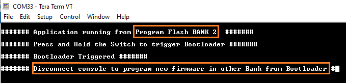

1.2.4 PIC32MZ Embedded Connectivity with FPU (EF) Starter Kit: Building and Running the UART Fail Safe Bootloader applications
Downloading and building the application
To clone or download this application from Github,go to the main page of this repository and then click Clone button to clone this repo or download as zip file. This content can also be download using content manager by following these instructions
Path of the application within the repository is apps/uart_fail_safe_bootloader/
To build the application, refer to the following table and open the project using its IDE.
Bootloader Application
| Project Name | Description |
|---|---|
| bootloader/firmware/pic32mz_ef_sk.X | MPLABX Project for PIC32MZ Embedded Connectivity with FPU (EF) Starter Kit |
Test Application
| Project Name | Description |
|---|---|
| test_app/firmware/pic32mz_ef_sk.X | MPLABX Project for PIC32MZ Embedded Connectivity with FPU (EF) Starter Kit |
Setting up PIC32MZ Embedded Connectivity with FPU (EF) Starter Kit
Connect a mini USB cable to the UART-USB port J11
For programming, connect a mini USB cable to the USB Debug port J3
Setting up the host script
Refer to Bootloader Host Script Help for setting up the btl_host.py utility used to send the application binary from host PC
Running the Application
Open the test application project test_app/firmware/pic32mz_ef_sk.X in the IDE
Build the project to generate the binary (Do not program the binary)
Open the bootloader project bootloader/firmware/pic32mz_ef_sk.X in the IDE
Build and program the application using the IDE
Run the btl_host.py from command prompt to program the test application binary to opposite panel
python <harmony3_path>/bootloader/tools/btl_host.py -v -s -i <COM PORT> -d pic32mz -a 0x9D100000 -f <harmony3_path>/bootloader_apps_uart/apps/uart_fail_safe_bootloader/test_app/firmware/pic32mz_ef_sk.X/dist/pic32mz_ef_sk/production/pic32mz_ef_sk.X.production.binFollowing snapshot shows output of successfully programming the test application
Swapping Bank And Rebooting and Reboot Done messages in below output signifies that bootloading is successful

If above step is successful then the LED3 should start blinking
Open the Terminal application (Ex.:Tera Term) on the computer
Configure the serial port settings as follows:
Baud : 115200
Data : 8 Bits
Parity : None
Stop : 1 Bit
Flow Control : None
Reset or Power cycle the device
LED3 should start blinking and you should see below output on the console
The Program Flash Bank Can be BANK 1 or BANK 2 based on from where the program is running


Press and hold the Switch SW1 to trigger Bootloader from test application to program firmware in other bank and you should see below output
Repeat Steps 5-11 once
This step is to verify that bootloader is running after triggering bootloader from test application in Step 12
Also to program the new firmware in opposite bank
You should see other Bank in console displayed compared to first run
Additional Steps (Optional)
To bootload any other application refer to Configuring an application to be bootloaded for MIPS based MCUs